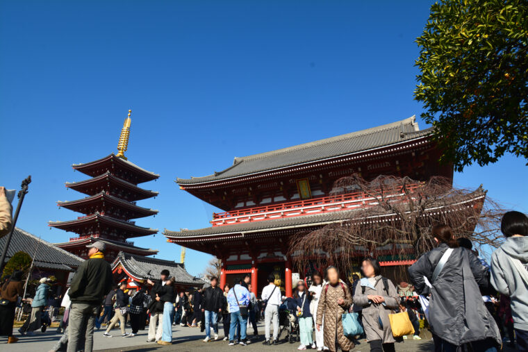
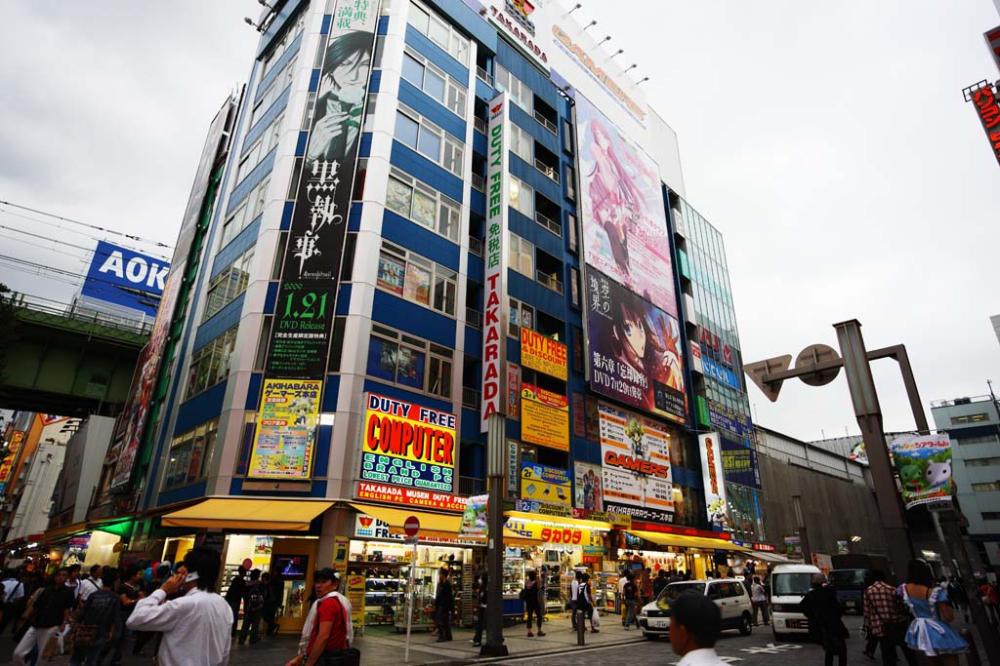
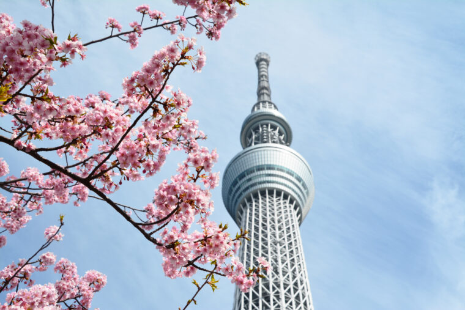
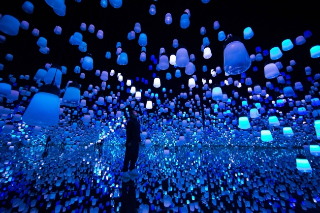

We provide fully customized travel plans for international travelers visiting Japan. From sightseeing to unique experiences and hidden gems, we create plans tailored to each customer's preferences.
If you have any questions or would like to start planning your trip, feel free to reach out!